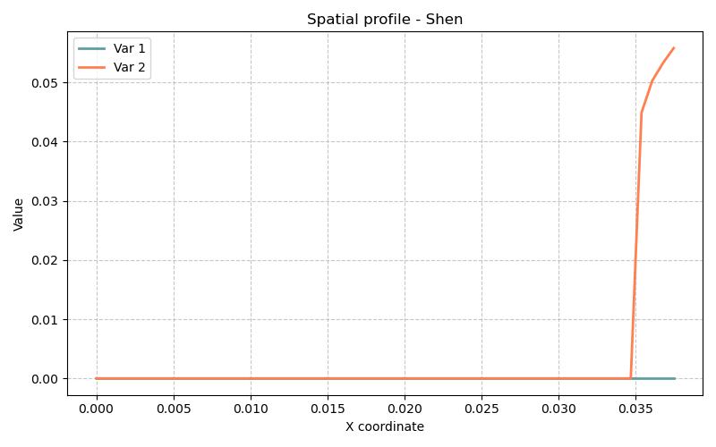

Modèle Shen — Carbonatation du béton au CO₂ supercritique
Fichiers sources :
src/Models/ModelFiles/Shen.c·base/Shen/ShenAuteur du modèle : Shen (d'après l'expérience de Duguid, 2006) Titre interne BIL :
"Carbonation of CBM with scCO2 (2012)"
Table des matières
- Contexte et objectif
- Hypothèses
- Variables et notation
- Modèle mathématique
- 4.1 Équations de conservation (bilans élémentaires)
- 4.2 Chimie de la solution aqueuse
- 4.3 Réactions solide–liquide : dissolution/précipitation
- 4.4 Transport : advection + diffusion + migration électrique
- 4.5 Phase gazeuse et solubilité du CO₂
- 4.6 Évolution de la porosité
- Conditions aux limites et initiales
- Cas test : Expérience de Duguid (
base/Shen/) - Paramétrage matériel du modèle
- Description pas-à-pas des fichiers d'entrée
- Références bibliographiques
1. Contexte et objectif
Le modèle Shen simule la carbonatation d'une matrice cimentaire (CBM — Cement-Based Material) par du CO₂ supercritique (scCO₂). Ce phénomène est central pour l'évaluation de l'intégrité à long terme des puits de forage cimentés utilisés dans les sites de stockage géologique du CO₂ (CCS — Carbon Capture and Storage).
Le scénario physique reproduit l'expérience de laboratoire de Duguid (2006) : un écoulement de scCO₂ est forcé à travers un carotte de grès à ciment, provoquant une cascade de réactions chimiques qui dissolvent les hydrates de ciment (portlandite CH, silicates de calcium hydratés CSH) et précipitent de la calcite (CC). Ces transformations modifient la porosité et, in fine, la perméabilité du ciment.
graph TD
A["Injection de scCO₂<br>(pression impose en x=0)"] --> B("Transport diphasique<br>Darcy gaz + liquide")
B --> C["CO₂ se dissout<br>dans l'eau poreuse"]
C --> D("Acidification de la solution<br>pH ↓, c_CO2 ↑")
D --> E["Dissolution de CH<br>(portlandite)"]
D --> F["Dissolution de CSH"]
E --> G("Précipitation de CC<br>(calcite)")
F --> G
G --> H["Modification de la porosité ϕ<br>(colmatage ou ouverture)"]
H --> B
2. Hypothèses
- Géométrie 1D axiale : La carotte de grès est discrétisée comme un segment de 3,75 cm (\(0\) à \(0.0375\) m). L'invasion du CO₂ se propage de la face gauche (injection) vers la droite.
- Milieu poreux biphasique : La porosité contient simultanément une phase liquide aqueuse (eau chargée en ions) et une phase gazeuse (CO₂ supercritique pur ou mélange CO₂-H₂O). Le degré de saturation liquide \(S_l\) dépend de la pression capillaire.
- CO₂ supercritique traité comme un gaz pur : La densité et la viscosité du CO₂ sont calculées via les équations d'état de Redlich-Kwong (densité) et de Fenghour (viscosité), tabulées sous forme de courbes en fonction de la pression \(P_{CO_2}\).
- Équilibre chimique local : La solution aqueuse est supposée à l'équilibre thermodynamique local à chaque pas de temps. Les concentrations des espèces secondaires sont déduites algébriquement des inconnues primaires.
- Cinétique de dissolution/précipitation finie : La dissolution de CH et la précipitation de CC suivent une cinétique du premier ordre contrôlée par les temps caractéristiques \(T_{CH}\) et \(T_{CC}\).
- Électroneutralité : La charge électrique totale de la solution est nulle, ce qui fournit l'équation supplémentaire pour déterminer la concentration en OH⁻ (et donc le pH).
- Température constante : \(T = 293\,\text{K}\) (20 °C). Toutes les constantes d'équilibre, coefficients de diffusion et viscosités sont calculés à cette température.
3. Variables et notation
Le modèle résout 7 équations (NEQ = 7) avec 7 inconnues primaires par nœud.
Inconnues primaires
| Symbole BIL | Signification | Type |
|---|---|---|
logp_co2 |
\(\log_{10}(P_g)\) — pression (log) du gaz CO₂ | Continue |
psi |
\(\psi\) — potentiel électrique de la solution | Continue |
z_ca |
\(z_{Ca,s}\) — quantité de Ca en phase solide (normalisée) | Continue |
z_si |
\(z_{Si,s}\) — quantité de Si en phase solide (normalisée) | Continue |
c_k |
\(c_K\) — concentration en K⁺ | Continue |
c_cl |
\(c_{Cl}\) — concentration en Cl⁻ | Continue |
p_l |
\(P_l\) — pression de la phase liquide | Continue |
La pression de gaz est résolue en espace logarithmique (
LOG_U) pour améliorer la convergence numérique sur plusieurs décades de pression. La pression liquide est résolue directement (NOLOG_U).
Équations résolues
| Index | Nom | Signification physique |
|---|---|---|
E_C |
carbone |
Conservation du carbone (C) |
E_q |
charge |
Conservation de la charge électrique |
E_Ca |
calcium |
Conservation du calcium (Ca) |
E_Si |
silicium |
Conservation du silicium (Si) |
E_K |
potassium |
Conservation du potassium (K) |
E_Cl |
chlorine |
Conservation du chlore (Cl) |
E_mass |
mass |
Conservation de la masse totale (eau + gaz) |
Variables secondaires calculées
À partir des 7 inconnues, le modèle déduit algébriquement : - Concentrations aqueuses de toutes les espèces : \(c_{OH}\), \(c_H\), \(c_{CO_2}\), \(c_{HCO_3^-}\), \(c_{CO_3^{2-}}\), \(c_{Ca^{2+}}\), \(c_{CaHCO_3^+}\), \(c_{H_3SiO_4^-}\), \(c_{H_4SiO_4}\), \(c_{H_2SiO_4^{2-}}\), \(c_{CaH_3SiO_4^+}\), \(c_{CaH_2SiO_4}\), \(c_{CaCO_3^{aq}}\), \(c_{CaOH^+}\), \(c_{H_2O}\) - Contenu des phases solides : \(n_{CH}\) (portlandite), \(n_{CC}\) (calcite), \(n_{Si,s}\) (Si dans les CSH) - Porosité \(\phi\), saturations \(S_l\), \(S_g\) - Densités de phase \(\rho_l\), \(\rho_g\)
4. Modèle mathématique
4.1 Équations de conservation (bilans élémentaires)
Pour chaque élément chimique \(\alpha \in \{C, Ca, Si, K, Cl\}\), la conservation s'écrit :
où \(N_\alpha\) est la quantité totale (liquide + gaz + solide) par unité de volume de milieu poreux et \(\mathbf{W}_\alpha\) est le flux total de l'élément \(\alpha\).
La conservation de charge (électroneutralité locale) :
La conservation de la masse totale (eau + CO₂ gaz) :
avec \(M = S_g \phi \rho_g + S_l \phi \rho_l + m_s\) (masse totale de fluide et de solide par unité de volume poreux).
4.2 Chimie de la solution aqueuse
Les concentrations des espèces aqueuses secondaires sont calculées à partir des constantes d'équilibre thermodynamiques (dépendantes de la température \(T\)) :
La neutralité électrique fournit \(c_{OH}\) :
où \(z_i\) est la charge de l'ion \(i\). C'est une équation algébrique résolue numériquement (polynôme d'ordre 4 en \(c_{OH}\)) à chaque pas de temps.
4.3 Réactions solide–liquide : dissolution/précipitation
Portlandite (CH = Ca(OH)₂) : se dissout si \(z_{CO_2} > 1\) (CO₂ en sursaturation), précipite si \(z_{CO_2} < 1\). La cinétique est du premier ordre :
Calcite (CC = CaCO₃) : se précipite lorsque CH se dissout. La cinétique suit :
avec \(T_{CH}\) et \(T_{CC}\) les temps caractéristiques de dissolution/précipitation (en secondes).
CSH (Silicates de Calcium Hydratés) : leur composition (rapport C/S = \(x_{CSH}\), rapport H/S = \(z_{CSH}\), volume molaire \(V_{CSH}\)) dépend du degré de saturation \(S_{CH}\) (état de saturation en CH). Ces propriétés sont lues depuis la courbe csh4p (modèle CSH4Poles).
Gel de silice amorphe (SH) : se forme lors de la décalcification des CSH. Son degré de saturation \(S_{SH}\) est calculé depuis les courbes CSH4Poles.
4.4 Transport : advection + diffusion + migration électrique
Pour chaque espèce aqueuse \(i\), le flux total combine trois mécanismes :
La perméabilité à la phase liquide : $\(k_l = \frac{k_{int,l}}{\mu_l} \cdot k_{rl}(P_c) \cdot \left(\frac{\phi}{\phi_0}\right)^3 \left(\frac{1-\phi_0}{1-\phi}\right)^2\)$
La perméabilité au gaz : $\(k_g = \frac{k_{int,g}}{\mu_{CO_2}(P_g)} \cdot k_{rg}(P_c) \cdot \left(\frac{\phi}{\phi_0}\right)^3 \left(\frac{1-\phi_0}{1-\phi}\right)^2\)$
La tortuosité pour la diffusion liquide (Millington-Quirk modifié) : $\(\tau_l(\phi, S_l) = \min\!\left(\frac{\phi}{0.25}, 1\right) \cdot \frac{0.00029 \, e^{9.95\phi}}{1 + 625\,(1-S_l)^4}\)$
4.5 Phase gazeuse et solubilité du CO₂
La densité molaire du CO₂ supercritique est calculée par l'équation de Redlich-Kwong (tabulée dans le fichier density_co2). La viscosité est calculée via la corrélation de Fenghour (tabulée dans viscosity_co2).
La solubilité du CO₂ dans l'eau à la pression \(P_g\) et température \(T\) (loi de Henry modifiée avec fugacité) :
La fraction molaire de H₂O dans la phase gazeuse : $\(y_{H_2O} = \frac{P_{sat}(T) \cdot \phi_{H_2O}^{sat}}{P_g \cdot \phi_{H_2O}}\)$
avec \(\phi_{H_2O}\) le coefficient de fugacité de H₂O dans le mélange CO₂-H₂O.
4.6 Évolution de la porosité
La porosité évolue dynamiquement par le changement de volume des solides :
avec \(V_{CH} = 33 \times 10^{-3}\) dm³/mol et \(V_{CC} = 37 \times 10^{-3}\) dm³/mol. La dissolution de CH (volume libéré) et la précipitation de CC (volume comblé) se compensent partiellement : la dissolution nette crée de la porosité tandis que la précipitation de calcite comble les pores.
5. Conditions aux limites et initiales
État initial (Initialization)
| Inconnue | Valeur initiale | Champ BIL | Signification |
|---|---|---|---|
logp_co2 |
Champ 1 → \(10^1 = 10\) Pa (transformée via exp) |
affine Val = 1. |
Pression CO₂ initiale basse |
psi |
Champ 0 → \(0\) |
affine Val = 0. |
Potentiel électrique nul |
z_si |
Champ 6 → \(-2\) |
affine Val = -2. |
CSH partiellement décalcifiés |
z_ca |
Champ 2 → \(0\) |
affine Val = 0. |
Solide calci-riche initial |
c_k |
Champ 5 → \(0.5\) mol/dm³ |
affine Val = 0.5 |
Potassium dissous |
c_cl |
Champ 5 → \(0.5\) mol/dm³ |
affine Val = 0.5 |
Chlorure dissous |
p_l |
Champ 8 → \(0.5\) Pa |
affine Val = 0.5 |
Pression liquide initiale |
Conditions aux limites (Boundary Conditions)
| Frontière | Inconnue | Condition | Signification |
|---|---|---|---|
Reg 3 (face d'injection, \(x=0\)) |
psi |
\(\psi = 0\) (Fonc 0 constante) | Potentiel électrique de référence |
Reg 3 (face d'injection) |
logp_co2 |
Imposée via Fonc 1 (profil décroissant de \(10^1\) à \(-0.5\)) | Montée en pression du CO₂ |
Reg 3 (face d'injection) |
p_l |
Imposée via Fonc 0 | Pression liquide à la face |
Reg 2 (toute la zone) |
c_k |
Imposée via Champ 9 = \(0.5\) mol/dm³, Fonc 0 | Concentration en K constante |
Reg 2 (toute la zone) |
c_cl |
Imposée via Champ 9 = \(0.5\) mol/dm³, Fonc 0 | Concentration en Cl constante |
Reg 3 (face d'injection) |
z_ca |
Imposée via Champ 4 = \(1\), Fonc 4 (rampe de \(-2\) à \(1\)) | Imposition du front de calcite |
6. Cas test : Expérience de Duguid (base/Shen/)
Géométrie et maillage
Le domaine est un segment 1D de longueur \(L = 0.0375\) m (3,75 cm), discrétisé avec 50 éléments de taille régulière \(\Delta x = 7.5 \times 10^{-4}\) m.
Protocole expérimental simulé
L'expérience de Duguid injecte du CO₂ supercritique dans une carotte de grès ciméntée sous pression de confinement. La pression du CO₂ est progressivement montée en face d'injection, forçant son invasion dans la porosité du ciment.
- \(t = 0\) à \(86\,400\) s (1 jour) : Phase transitoire d'établissement du front CO₂.
- \(t = 86\,400\) à \(864\,000\) s (10 jours) : Progression du front de carbonatation.
- \(t = 864\,000\) à \(2\,592\,000\) s (30 jours) : Stabilisation et possible rebouchage par la calcite.
Résultats attendus
Le scénario produit un front de carbonatation qui avance de la face d'injection vers le fond :
- Zone carbonatée (près de \(x = 0\)) : La portlandite est totalement dissoute (\(n_{CH} \approx 0\)), les CSH décalcifiés sont transformés en gel de silice. La calcite précipitée comble une partie de la porosité. Le pH chute de ~12 à ~6.
- Zone de transition : Coexistence des phases solides en cours de transformation, gradient important de \(c_{CO_2}\) et de pH.
- Zone saine (près de \(x = L\)) : Ciment intact (\(n_{CH}\) élevé, pH > 12, pas de calcite).
La porosité oscille selon le bilan volumique : - La dissolution de CH libère du volume → \(\phi\) augmente. - La précipitation de CC occupe du volume → \(\phi\) diminue localement. - Le résultat net peut mener à un colmatage partiel (perméabilité réduite) si la précipitation de calcite domine.

7. Paramétrage matériel du modèle
| Paramètre | Valeur dans base/Shen/Shen |
Rôle physique |
|---|---|---|
porosite |
0.4 | Porosité initiale du grès cimenté |
N_CH |
5.16 mol/dm³ | Contenu initial en portlandite (référence pour \(n_{Ca,s}\)) |
N_Si |
3.9 mol/dm³ | Contenu initial en Si dans les CSH (référence pour \(n_{Si,s}\)) |
T_CH |
\(4 \times 10^5\) s | Temps caractéristique de dissolution de CH (\(\approx 4.6\) jours) |
k_intl |
\(2 \times 10^{-17}\) m² | Perméabilité intrinsèque à la phase liquide |
k_intg |
\(1.4 \times 10^{-16}\) m² | Perméabilité intrinsèque à la phase gazeuse (CO₂) |
temperature |
293 K | Température de l'expérience (\(\approx 20\) °C) |
Curves = CN_courbe |
Fichier tabulé 4 col. | Courbes de capillarité : \(S_l(P_c)\), \(k_{rl}(P_c)\), \(k_{rg}(P_c)\) |
Curves_log = csh4p |
Fichier tabulé 5 col. | Propriétés des CSH : rapport C/S, H/S, volume molaire, \(q_{SH}\), \(X_S\) |
Curves = density_co2 |
Fichier tabulé (Redlich-Kwong) | Densité molaire du CO₂ : \(\rho_{CO_2}(P, T=293\,\text{K})\) |
Curves = viscosity_co2 |
Fichier tabulé (Fenghour) | Viscosité dynamique du CO₂ : \(\mu_{CO_2}(P, T=293\,\text{K})\) |
8. Description pas-à-pas des fichiers d'entrée
8.1 Fichier de pilotage base/Shen/Shen
Bloc Geometry
Simulation monodimensionnelle (1) en géométrie axiale. BIL interprète le problème comme un problème de transport selon un axe unique.
Bloc Mesh
4 0 0 0.0375 0.0375: Maillage de type 4 (segment), de \(x=0\) à \(x=0.0375\) m, sur la même épaisseur (section transversale virtuelle de 1 dm²).1.e-3: Tolérance géométrique du mailleur.1 50 1: 1 couche d'éléments, 50 éléments sur la longueur, 1 couche en épaisseur.1 1 1: Indices des régions géométriques (Reg 1 = base, Reg 2 = volume, Reg 3 = face d'injection).
Bloc Material
Model = Shen
porosite = 0.4
N_CH = 5.16
N_Si = 3.9
T_CH = 4.e5
k_intl = 2.e-17
k_intg = 1.4e-16
temperature = 293.
Curves = CN_courbe
Curves_log = csh4p q_CH = Range{...} X_S = CSH4Poles(1){...}
Curves = density_co2 P_co2 = Range{...} Rho_co2 = Redlich-Kwong_CO2(1){...}
Curves = viscosity_co2 P_co2 = Range{...} Mu_co2 = Fenghour_CO2(1){...}
Model = Shen: Sélection du modèle physique dans BIL.- Les paramètres scalaires (
porosite,N_CH, etc.) sont lus par la fonctionpm()du modèle. Curves = CN_courbe: Charge la table de 7000 points à 4 colonnes : \(P_c\) (Pa), \(S_l\), \(k_{rl}\), \(k_{rg}\). Utilisée pour interpoler le degré de saturation et les perméabilités relatives en fonction de la pression capillaire.Curves_log = csh4p: Charge la table CSH4Poles (5 colonnes) en abscisse logarithmique. Les colonnes sont : \(q_{CH}\) (activité ionique de CH), \(X_S\) (rapport Si), \(z\) (rapport H/S), \(V\) (volume molaire), \(q_{SH}\). Construite avec le modèle thermodynamique CSH4Poles à T=293 K, avec les paramètres \(y_{Tob1}=2.4\), \(y_{Tob2}=1.8\), \(y_{Jen}=0.9\), \(z_S=0\).Curves = density_co2: Table Redlich-Kwong sur \([0, 60\,\text{MPa}]\) avec 1001 points. Colonne 1 = \(P_{CO_2}\) (Pa), colonne 2 = \(\rho_{CO_2}\) (mol/dm³) à 293 K.Curves = viscosity_co2: Table Fenghour sur \([0, 60\,\text{MPa}]\) avec 1001 points. Colonne 1 = \(P_{CO_2}\) (Pa), colonne 2 = \(\mu_{CO_2}\) (Pa·s) à 293 K.
Bloc Fields
Fields
9
Type = affine Val = -10. Grad = 0. Point = 0. # Champ 0: logp_co2 = -10 (p_g ≈ 0)
Type = affine Val = 1. Grad = 0. Point = 0. # Champ 1: logp_co2 = 1 (p_g = 10 Pa)
Type = affine Val = 0. Grad = 0. Point = 0. # Champ 2: z_ca = 0
Type = affine Val = 1. Grad = 0. Point = 0. # Champ 3: valeur 1
Type = affine Val = 0.5 Grad = 0. Point = 0. # Champ 4: z_ca = 1 (CL injection)
Type = affine Val = 1. Grad = 0. Point = 0. # Champ 5: c_k = c_cl = 0.5 mol/dm³
Type = affine Val = -2. Grad = 0. Point = 0. # Champ 6: z_si = -2
Type = affine Val = 100000. Grad = 0. Point = 0. # Champ 7: 10^5 Pa
Type = affine Val = 0.5 Grad = 0. Point = 0. # Champ 8: p_l = 0.5 Pa
Tous les champs sont affines (constants ici, gradient nul). BIL les interprète comme \(\text{valeur}(x) = \text{Val} + \text{Grad} \cdot (x - \text{Point})\).
Bloc Initialization
Initialization
7
Reg = 2 Inc = logp_co2 Champ = 1 → logp_co2 = 1.0 (P_g = 10 Pa) sur tout le domaine
Reg = 2 Inc = psi Champ = 0 → psi = 0. (potentiel nul)
Reg = 2 Inc = z_si Champ = 6 → z_si = -2. (CSH décalcifiés)
Reg = 2 Inc = z_ca Champ = 2 → z_ca = 0. (solide en état initial)
Reg = 2 Inc = c_k Champ = 5 → c_k = 0.5 mol/dm³
Reg = 2 Inc = c_cl Champ = 5 → c_cl = 0.5 mol/dm³
Reg = 2 Inc = p_l Champ = 8 → p_l = 0.5 Pa
Reg = 2 désigne l'ensemble du domaine volumique (l'intérieur de la carotte).
Bloc Functions
Functions
4
N = 2 F(0) = 1. F(7200) = -0.5 # Fonc 1: logp_co2 à la face injectante (montée rapide)
N = 5 F(0) = 1. F(2400000) = 1. F(3200000) = -0.4 F(4000000) = -0.8 F(8400000) = -0.9 # Fonc 2: pression gas multiphasique
N = 3 F(0) = -2. F(8540000) = -1. F(8640000) = 1 # Fonc 3: z_ca CL (rampe de -2 à 1)
N = 2 F(0) = 1. F(7200) = -20. # Fonc 4: z_ca injection rapide
Chaque fonction est une interpolation linéaire par morceaux dans le temps (en secondes). Par exemple, Fonc 1 impose \(\log p_{CO_2}\) à la face d'injection : il part de la valeur Val * Fonc(t) du champ. À \(t = 0\), le facteur vaut \(1\) (pression = \(10^1\) Pa), puis évolue linéairement jusqu'à \(-0.5\) à \(t = 7200\) s (2 heures), faisant monter la pression.
Bloc Boundary Conditions
Boundary Conditions
6
Reg = 3 Inc = psi Champ = 0 Fonc = 0 → psi = 0 * 0 = 0 (référence de potentiel)
Reg = 3 Inc = logp_co2 Champ = 1 Fonc = 1 → pression CO₂ imposée selon Fonc 1
Reg = 3 Inc = p_l Champ = 8 Fonc = 0 → p_l = 0 * 0 = 0
Reg = 2 Inc = c_k Champ = 9 Fonc = 0 → c_k maintenu à 0.5
Reg = 2 Inc = c_cl Champ = 9 Fonc = 0 → c_cl maintenu à 0.5
Reg = 3 Inc = z_ca Champ = 4 Fonc = 4 → z_ca imposition selon Fonc 4 (rampe)
Reg = 3 est la frontière gauche (\(x = 0\)), face d'injection. Fonc = 0 correspond à la 1ère fonction (d'index 0) qui est ici constante (ou signifie que la valeur est le champ seul). Plusieurs conditions en Reg = 2 imposent des concentrations volumiques aux potassium et chlorure.
Bloc Dates
4 instants de sortie demandés : \(t = 0\), \(1\) jour (\(86\,400\) s), \(10\) jours (\(864\,000\) s), \(30\) jours (\(2\,592\,000\) s). Les fichiers Shen.t0 à Shen.t3 correspondent à ces 4 sorties.
Bloc Objective Variations
Objective Variations
logp_co2 = 0.1
z_si = 1.e-1
z_ca = 1.e-1
psi = 0.1
c_k = 0.1
c_cl = 0.1
p_l = 10000.
Définit la variation relative maximale tolérée par inconnue pour le contrôle adaptatif du pas de temps. BIL augmente \(\Delta t\) si toutes les variations sont inférieures à ces seuils, et le diminue sinon. p_l = 10000. Pa de variation autorisée par pas de temps reflète le fait que la pression liquide peut varier fortement en début de simulation.
Bloc Iterative Process
Newton-Raphson : maximum 10 itérations par pas de temps, tolérance sur le résidu normalisé de \(10^{-4}\), sans répétition de pas de temps en cas de non-convergence.
Bloc Time Steps
Dtini = 10 s: Pas de temps initial très petit, car les fronts chimiques sont raides au démarrage.Dtmax = 100 000 s(\(\approx 27.8\) heures) : Pas de temps maximum autorisé.
9. Références bibliographiques
-
Duguid, A. (2006). The effect of CO₂ on the integrity of well cements. Princeton University PhD Thesis. — Expérience de référence simulée dans ce cas test : injection de scCO₂ dans une carotte de grès ciméntée.
-
Shen, J., Dangla, P., Thiery, M. (2013). Reactive transport modeling of CO₂ through cementitious materials under CO₂ geological storage conditions. International Journal of Greenhouse Gas Control, 18, 75–87. — Article de référence pour le modèle numérique implémenté dans
Shen.c. -
Redlich, O., & Kwong, J. N. S. (1949). On the thermodynamics of solutions. V. An equation of state. Chemical Reviews, 44(1), 233–244. — Équation d'état pour la densité du CO₂ supercritique.
-
Fenghour, A., Wakeham, W. A., & Vesovic, V. (1998). The viscosity of carbon dioxide. Journal of Physical and Chemical Reference Data, 27(1), 31–44. — Corrélation pour la viscosité du CO₂ supercritique.
-
Jennings, H. M. (2000). A model for the microstructure of calcium silicate hydrate in cement paste. Cement and Concrete Research, 30(1), 101–116. — Base du modèle CSH4Poles utilisé pour décrire la composition des CSH en fonction de leur état de saturation.
-
Coussy, O. (2004). Poromechanics. John Wiley & Sons. — Cadre théorique général pour la modélisation des milieux poreux multiphasiques.